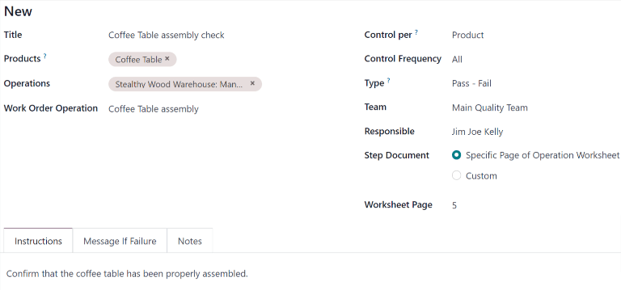

Puntos de control de calidad¶
En Odoo, los puntos de control de calidad se utilizan para crear controles de calidad de forma automática en intervalos predeterminados. Además, se pueden configurar para crear controles de calidad para operaciones específicas (como fabricación, entrega, entre otras), así como para productos específicos dentro de esas operaciones.
El uso de puntos de control de calidad permite que los equipos de calidad se aseguren de inspeccionar con frecuencia los productos en busca de defectos y otros errores.
Configure los puntos de control de calidad¶
Para crear un nuevo punto de control de calidad, vaya a y haga clic en Nuevo.
Complete el nuevo punto de control de calidad y proporciónele un título único para que lo pueda identificar con facilidad.
En el campo Productos, seleccione el o los productos a los que aplicará el punto de control de calidad. En caso de que deba aplicarlo a una categoría completa, selecciónela en el campo Categorías de productos.
En el campo Operaciones seleccione aquellas que deben activar el punto de control de calidad. Por ejemplo, seleccionar la opción Fabricación en el campo Operaciones hace que se cree un control de calidad para las nuevas órdenes de fabricación.
Nota
El campo Operaciones debe incluir al menos una operación al crear un nuevo punto de control de calidad. Sin embargo, puede dejar los campos Productos y Categorías de productos vacíos y, en ese caso, el punto de control de calidad generará verificaciones de calidad en cada instancia de las operaciones especificadas.
Si selecciona la operación Fabricación en el campo Operaciones, aparecerá un nuevo campo abajo con el nombre Operación de orden de trabajo. En este campo deberá seleccionar una orden de trabajo específica para generar controles de calidad para esa operación, en lugar de la operación de fabricación en general.
Por ejemplo, podría configurar un punto de control de calidad para crear controles de calidad para la orden de trabajo Ensamblaje del producto Mesa de centro. Al confirmar una nueva orden de fabricación para una mesa de centro, el punto de control de calidad creará un control de calidad específico para la operación de ensamblaje.
En el campo Control por deberá seleccionar una de las tres opciones que determinan cuándo se creará un nuevo control de calidad:
Operación: se solicita un control para la operación especificada de forma total.
Producto: se solicita un control para cada producto único incluido en la operación especificada. Por ejemplo, una operación de entrega de una mesa y cuatro sillas generaría dos controles, ya que hay dos productos únicos incluidos en ella.
Cantidad: se solicita un control para un porcentaje determinado de artículos en la operación especificada. Este porcentaje se establece al habilitar la casilla de verificación Prueba de transferencia parcial, después deberá establecer un valor numérico en el campo Porcentaje que aparece abajo. Si la casilla de verificación no está seleccionada, entonces se creará solo un control de calidad para la cantidad completa.
En el campo Frecuencia de control deberá seleccionar una de las tres opciones que determinan con qué frecuencia se creará un nuevo control de calidad:
Todos: se solicita un control de calidad cada que se cumplen las condiciones del punto de control de calidad.
Aleatoria: se solicita un control de calidad para un porcentaje determinado de operaciones, puede especificarlo en el campo Cada #% de transferencias que aparece abajo.
Periódica: se solicita un control de calidad una vez cada cierto periodo, puede especificarlo al proporcionar un valor numérico en el campo de abajo y elegir Días, Semanas o Meses como intervalo.
En el campo Tipo deberá especificar el tipo de control de calidad que debe realizarse. El método para procesar los controles creados depende del tipo de control de calidad seleccionado:
Los controles de tipo Instrucciones proporcionan instrucciones específicas sobre cómo realizar el control de calidad.
Los controles de tipo Tomar una foto necesitan que suba una fotografía del producto para que después el equipo de calidad asignado pueda revisarla.
Los controles de tipo Registrar producción le solicitan a los empleados de fabricación que confirmen la cantidad del producto que se produjo durante la operación de fabricación.
Los controles de tipo Aprueba - Falla especifican el criterio con el que los productos deben cumplir para que aprobar el control de calidad.
Los controles de tipo Medida le solicitan a los empleados que registren una medida del producto que debe estar dentro de la tolerancia de un valor normal para que el control sea aprobatorio.
Los controles de tipo Hoja de trabajo proporcionan una hoja de trabajo interactiva que el empleado que procesa el control deberá completar.
Importante
Un control de tipo Instrucciones es igual a un paso en una orden de trabajo para una orden de fabricación.
Al agregar un paso a una orden de trabajo, Odoo lo almacena en la aplicación Calidad como un punto de control de calidad. Es posible crear puntos de control de calidad de forma manual con un control de tipo Instrucciones e incluso puede asignárselo a una operación que no sea de fabricación, por ejemplo, recepciones.
Sin embargo, al crear un punto de control en particular con fines de control de calidad, probablemente lo más eficaz sea usar un control con un tipo distinto.
En el campo Equipo especifique el equipo de calidad responsable de gestionar el punto de control de calidad y los controles que crea. Si un miembro específico del equipo de calidad es el responsable, selecciónelo en el campo Responsable.
El campo Documento de paso incluye dos opciones que especifican la ubicación de un documento instructivo para describir cómo completar los controles de calidad creados.
Seleccione Página específica de la hoja de trabajo de operación si el documento está incluido en la hoja de trabajo instructiva para la orden de trabajo, después escriba el número de página en el campo Página de la hoja de trabajo.
Seleccione Personalizado si es necesario incluir el documento en la pestaña Instrucciones en la parte inferior del punto de control de calidad.
Proporcione las instrucciones sobre cómo completar los controles creados por el punto de control de calidad en la pestaña Instrucciones en la parte inferior del formulario.
Si seleccionó la opción Personalizado en el campo Documento de paso podrá adjuntar un documento en esta pestaña. Seleccione el botón Suba su archivo para abrir el administrador de archivos de su dispositivo y luego seleccione un archivo o agregue un enlace a un documento de Google Slides en el campo Enlace de presentación de Google.
En la pestaña Mensaje en caso de error incluya las instrucciones relacionadas a los pasos a seguir en caso de que el control de calidad falle. Por ejemplo, instruya al empleado encargado del control de calidad a crear una alerta de calidad.
La pestaña Notas se utiliza para proporcionar información adicional sobre el punto de control de calidad, por ejemplo, aquí puede agregar el motivo por el que lo creó. Los empleados que procesan los controles creados por el punto de control de calidad no pueden visualizar la información de esta pestaña.
